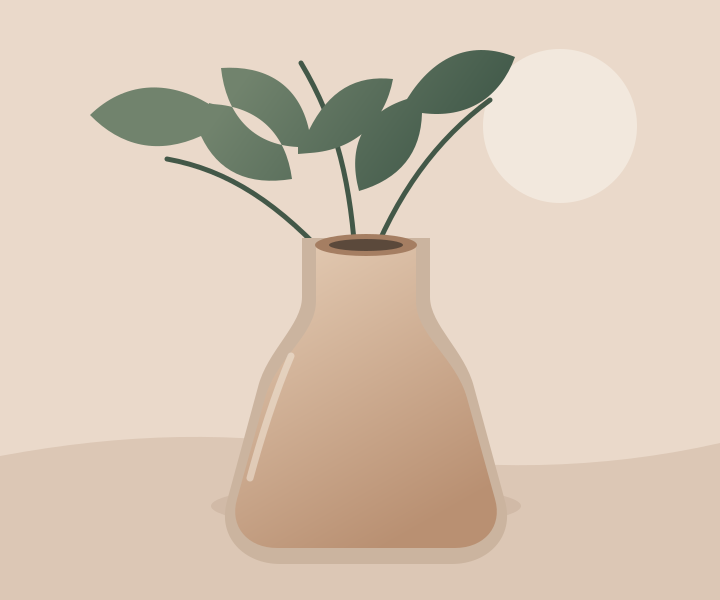
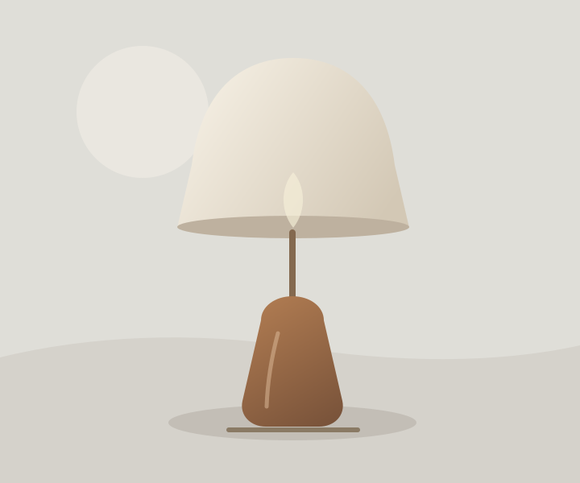
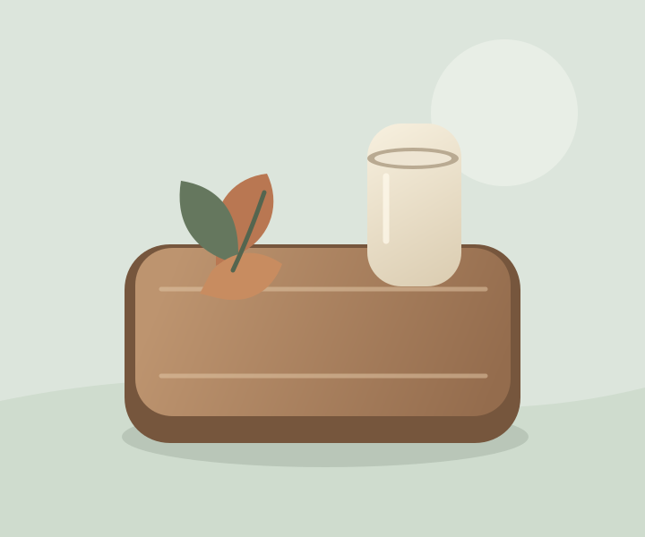
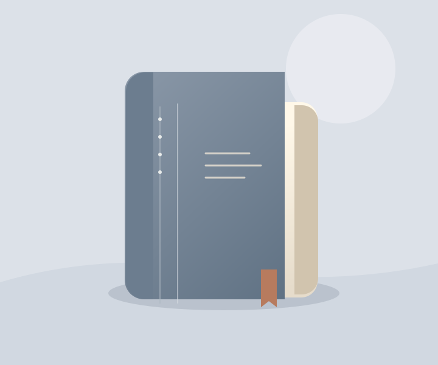

Cerâmica · feito à mão
Vaso Aurora
R$ 189Esmalte mineral fosco e linhas orgânicas para flores ou ramos secos.
Ver detalhes
Produzido em cerâmica de alta temperatura. Cada peça tem pequenas variações de forma e tonalidade.
Objetos escolhidos com calma, para acompanhar todos os dias.
Coleção essencial · 01
Peças de formas simples e materiais honestos, feitas para encontrar seu lugar na rotina.
Descubra os produtosFeito para o cotidiano
Formas, texturas e pequenos detalhes
para deixar a casa com a sua cara.

Cerâmica · feito à mão
Esmalte mineral fosco e linhas orgânicas para flores ou ramos secos.
Produzido em cerâmica de alta temperatura. Cada peça tem pequenas variações de forma e tonalidade.

Iluminação · madeira e linho
Luz suave e desenho leve para acompanhar o fim do dia.
Base torneada em madeira e cúpula em tecido de linho. Ideal para uma lâmpada de luz quente.

Mesa · madeira maciça
Um apoio versátil para servir, organizar e criar novos rituais.
Madeira com acabamento natural e bordas arredondadas. Limpar com pano macio e levemente úmido.

Papelaria · capa dura
Páginas para anotar ideias, desenhar planos e guardar lembranças.
Capa rígida revestida em tecido, miolo pontilhado e marcador de página em fita de algodão.
Nosso jeito de escolher
A Casa Norte reúne objetos que combinam função, matéria e cuidado. Uma coleção pequena, pensada para durar e fazer parte da vida como ela é.